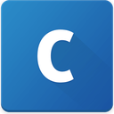
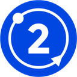
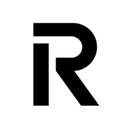

Guía · revisada el 17/10/2026 · datos ESMA a 22/10/2026
Guía MiCA en España: licencia CASP, notificación y fin del periodo transitorio
Qué exige MiCA para ofrecer servicios cripto en España, qué significan «Art. 59» y «Art. 60» y cómo comprobar si tu exchange está autorizado.
En cifras
- Pueden operar en España
- 209 proveedores (16 con sede en España)
- Proveedores MiCA activos en la UE/EEE
- 377
- Con licencia CASP (Art. 59)
- 209
- Por notificación (Art. 60)
- 160
- Vía no determinada
- 8
Registro de ESMA a 22/10/2026. Cómo se clasifica cada proveedor: metodología.
¿Qué es MiCA?
MiCA es el Reglamento (UE) 2023/1114, de 31 de mayo de 2023, relativo a los mercados de criptoactivos. Regula, entre otras cosas, a los proveedores de servicios de criptoactivos (CASP): custodia, plataformas de negociación, canje, ejecución de órdenes, asesoramiento, gestión de carteras o transferencias.
¿Qué diferencia hay entre el artículo 59 y el artículo 60 de MiCA?
El artículo 59 exige estar autorizado como proveedor de servicios de criptoactivos (la «licencia» CASP). El artículo 60 permite a entidades financieras ya supervisadas, como bancos, empresas de servicios de inversión, entidades de dinero electrónico o gestoras, prestar servicios cripto notificándolo a su supervisor, sin una autorización CASP aparte. En el registro de ESMA las autorizaciones CASP aparecen con la base legal «Article 63», el artículo que regula su concesión.
¿Cuándo terminó el periodo transitorio de MiCA en España?
El artículo 143.3 de MiCA permitía a cada Estado un periodo transitorio de hasta 18 meses. Según la CNMV, en España terminó el 1 de julio de 2026: desde entonces solo pueden operar en España proveedores autorizados por la CNMV o por otra autoridad competente de la UE.
¿Quién pudo acogerse al periodo transitorio en España?
Según la CNMV, quienes ya prestaban servicios con criptoactivos conforme a la normativa española antes de la aplicación de MiCA, en particular los inscritos en el registro del Banco de España a 30 de diciembre de 2024, que pudieron seguir prestando los mismos servicios hasta el 1 de julio de 2026 o hasta que se les denegara la autorización, si era antes.
¿Puede operar en España un exchange autorizado en otro país de la UE?
Sí, si España figura entre sus países notificados. Una autorización MiCA es válida en toda la UE y el proveedor la extiende a otros países mediante notificación a su supervisor (pasaporte europeo). Por eso en este buscador «Puede operar en España» exige autorización vigente y España como país de origen o notificado.
¿Qué pasa si mi plataforma no está autorizada?
La CNMV indicó que los proveedores sin autorización deben tener un plan de migración que permita a los clientes mover sus criptoactivos a otras direcciones y sus fondos a cuentas de efectivo, o aceptar un traspaso a otro proveedor que sí esté autorizado. Los clientes de una entidad no autorizada no cuentan con las protecciones de MiCA.
¿Cómo compruebo si un exchange está autorizado en España?
Mira en los términos legales de la app qué sociedad te presta el servicio y búscala en el registro MiCA de ESMA: debe tener autorización vigente y España como país de origen o entre sus países notificados. La CNMV publica también un listado de proveedores. Este buscador reproduce el registro de ESMA con fecha y lo actualiza cada semana.
Glosario
- CASP
- Proveedor de servicios de criptoactivos (crypto-asset service provider): la entidad que te presta el servicio, no la marca de la app.
- Art. 59 · licencia CASP
- Autorización como proveedor de servicios de criptoactivos concedida por un supervisor de la UE/EEE. En el registro de ESMA aparece como «Article 63».
- Art. 60 · notificación
- Vía para entidades financieras ya supervisadas (bancos, empresas de inversión, entidades de dinero electrónico, gestoras…) que añaden servicios cripto notificándolo a su supervisor.
- Pasaporte europeo
- Extensión de una autorización MiCA a otros países de la UE/EEE mediante notificación. Para operar en España, España debe figurar entre los países notificados.
- Periodo transitorio
- Plazo en que quienes ya operaban con la normativa nacional podían seguir sin autorización MiCA. En España terminó el 1 de julio de 2026.
- Registro de ESMA
- Registro provisional MiCA que publica la Autoridad Europea de Valores y Mercados (archivo CASPS.csv), con todos los proveedores autorizados o notificados en la UE/EEE.
- Entidades no conformes
- Lista de ESMA (NCASP.csv) con entidades que prestan servicios cripto sin autorización, según los supervisores nacionales.
- LEI
- Código identificador de entidad jurídica (20 caracteres). Es la forma más fiable de distinguir dos sociedades con nombres parecidos.
Fuentes oficiales
- Reglamento (UE) 2023/1114 (MiCA), texto en EUR-Lex
- CNMV: MiCA, nueva regulación de criptoactivos
- CNMV: preguntas y respuestas sobre el Reglamento MiCA (PDF)
- CNMV: proveedores de servicios de criptoactivos
- ESMA: registro provisional MiCA
Esta guía resume fuentes públicas y no es asesoramiento jurídico ni financiero.
Comprueba las marcas más buscadas
Ver todas →
CoinbaseLuxemburgo · Art. 59Puede operar en EspañaKrakenIrlanda · Art. 59 · inferidoPuede operar en EspañaBitvavoPaíses Bajos · Art. 59Puede operar en España
Bit2MeEspaña · Art. 59Puede operar en España
RevolutChipre · Art. 59 · inferidoPuede operar en EspañaeToroChipre · Art. 60 · probablePuede operar en EspañaBitpandaAustria · Art. 59Puede operar en EspañaCrypto.comMalta · Art. 59 · inferidoPuede operar en EspañaLos cambios del registro, cada lunes
Altas, bajas, retiradas y quién gana o pierde el permiso para operar en España. Un correo, sin ruido.
- Gratis
- Un correo a la semana
- Baja en un clic
Se abre la página de suscripción de Beehiiv en una pestaña nueva: esta web no carga nada de Beehiiv ni recoge tu correo. Allí Beehiiv trata tu dirección como encargado del tratamiento. Más información en la política de privacidad.